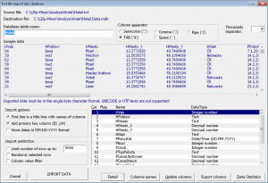
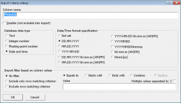
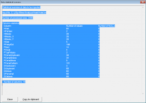

Začínáme
Systém LISp-Miner a proces DZD
Analytické procedury
Pokročilé funkce
Výzkum a vývoj
Začínáme
Systém LISp-Miner a proces DZD
Analytické procedury
Pokročilé funkce
Výzkum a vývoj
Data k analýze jsou často získána jako textový soubor ve formátu CSV (zkratka z Comma-Separated Values), případně v podobném s jiným oddělovačem sloupců, než je čárka. Proto byla do systému LISp-Miner implementována funkce importu textového souboru, která jeho obsah uloží do nově vytvořené databáze a zároveň k němu rovnou vytvoří i metabázi. Ze strany uživatele tak není třeba pracovat s žádným databázovým nástrojem a dvojice data+metabáze se vytvoří automaticky. V případě rozsáhlých dat však může být třeba zvážit ruční import dat – viz doporučení pro import dat.
Data v textovém souboru musí být uložena na řádcích (jeden objekt na jednom řádku) a jednotlivé hodnoty musí být odděleny jedním z povolených oddělovačů (čárka, středník, tabulátor nebo mezera). Podporovány jsou pouze textové soubory v jednobajtových kódováních (např. ASCII, Windows-1250). Kódování UTF-8 a UTF-16 nejsou podporována.
 Import dat spustíme tlačítkem New from TXT v úvodním dialogovém okně po spuštění modulu LM Workspace. Objeví se standardní systémové okno pro otevření souboru (ve výchozím stavu omezené pouze na přípony CSV a TXT), pomocí kterého nalezneme a otevřeme soubor s analyzovanými daty. Po jeho vybrání se objeví dialogové okno pro nastavení parametrů importu – viz obrázek.
Nejprve zkontrolujeme, že byl správně rozpoznán oddělovač sloupců. Obvykle se stačí podívat na ukázku dat, jestli vidíme správně oddělené hodnoty ve sloupcích. V opačném případě zkusíme volbu jiného oddělovače sloupců v rámečku Column separator.
Po pečlivé kontrole názvů a datových typů sloupců a případném omezení rozsahu importovaných dat spustíme import stiskem tlačítka IMPORT DATA. Data se importují do databáze formátu MS Access a název MDB souboru je odvozen od názvu importovaného textového souboru. Z názvu textového souboru je odvozen i název databázové tabulky, který je však možné změnit.
Pozor! Používáme-li počítač s nastaveným anglickým jazykovým prostředím (a formátem datumu ve tvaru měsíc-den-rok), musíme pro správný import sloupců typu Datum/Čas zaškrtnout volbu Store dates in MM-DD-YYYY format.
Poznámka: Nemáme-li českou instalaci Windows a načítáme-li data s českou diakritikou, zaškrtneme volbu Convert to ASCII (remove Czech accents), aby se i v cizojazyčném prostředí zobrazovaly textové hodnoty v čitelné podobě.
Po úspěšném importu je vytvořen databázový soubor ve formátu MS Access a uložen do stejné složky jako původní textový soubor, pod shodným názvem, ale s příponou MDB. Tím jsem se dostali do stavu, ve kterém máme analyzovaná data v databázi ve formátu MS Access a stačí k nim jen nechat vytvořit metabázi. Příslušné dialogové okno se automaticky objeví po zavření okna se zprávou o importu.
Součástí výsledků importu je i zpráva o počtu úspěšně načtených řádků a případně i o chybách při importu (zejména z důvodu rozdílného datového typu hodnot a sloupce databázové tabulky, do kterého měly být naimportovány).
Funkce importu se snaží automaticky odhadnout strukturu textového souboru. Zejména se pokusí zjistit použitý znak oddělovače sloupců; zda první řádek v datech obsahuje titulek s názvy sloupců; a konečně odhadne i datové typy jednotlivých sloupců. V náhledu je zobrazena ukázka prvních několik záznamů, v pravém dolním rohu pak názvy sloupců a jejich datové typy.
Pozor! Odhad datového typu nemusí být vždy přesný – již jen proto, že je proveden pouze na základě hodnot v několika prvních řádcích importovaného souboru. Před pokračováním v importu je třeba pečlivě všechna nastavení zkontrolovat. Jakákoliv přehlédnutí – nevhodné názvy nebo použité datové typy – mohou v dalších fázích analýzy způsobit nemalé problémy a později se pouze velmi pracně opravují. Zejména je třeba dát pozor na:
 Speciální pozornost je třeba věnovat správnému nastavení sloupců typu Datum/Čas (angl. Date/Time). Po nastavení datového typu na Date and time je třeba vybrat i upřesňující formát v rámečku Date/Time format specification. Na výběr je několik formátů – pouze datumy (včetně volby pořadí měsíc–den), pouze časy, nebo oboje najednou.
Poznámka: Uváděné formáty jsou na obrazovce uvedeny s oddělovacím znakem ‘.’ (tečka). V importovaném souboru však mohou být použity i znaky lomítko nebo čárka.
Mezi základní požadavky a doporučení standardu SQL (resp. rozhraní ODBC) pro pojmenování tabulek a sloupců patří:
Zadané parametry pro import sloupců si můžeme vyexportovat pro další použití (např. do popisu provedené analýzy) pomocí tlačítka Export columns.
V přehledu jsou názvy sloupců, použité datové typy (a případně i formáty) a informace, zda byl (či nebyl) sloupec zařazen do importu.
Ve vytvářené databázové tabulce je třeba dále zajistit existenci primárního klíče. Přestože v datech může existovat sloupec, jehož hodnoty jednoznačně identifikují záznamy, doporučujeme při importu ponechat zaškrtnutou volbu Add primary key column (ID_LM). Tím bude do výsledné tabulky přidán umělý primární klíč ID_LM, který bude následně i automaticky rozpoznán systémem LISp-Miner.
Před spuštěním importu velmi rozsáhlých dat může být vhodné omezit počet načítaných řádků – např. pro prvotní seznámení s daty.
Omezit lze jednak celkový počet načítaných řádků. V tom případě se načte pouze řádku až do zadaného limitu – buď od začátku textového souboru, nebo náhodně (je-li zaškrtnuta volba Randomly selected rows). Zároveň lze omezit načítané řádky podle hodnot v jednom (nebo více) sloupcích.
Otevřeme dialogové okno s detailní informaci o sloupci jeho výběrem v seznamu a následném stisknutí tlačítka Detail. V rámečku Import filter based on columns values zvolíme, zda chceme kritérium zadávat pro záznamy, které se mají vkládat, nebo naopak pro záznamy, které se vkládat nemají.
Následně zvolíme, zda se v rámci vyhodnocování kritéria má hodnota v daném sloupci rovnat, začínat, končit danou hodnotou nebo mít daný řetězec znaků na libovolné pozici. Potom zadáme i samotnou hodnotu kritéria.
Při zaškrtnutí volby Multiple values separated by ´|´ můžeme zadat více různých hodnot kritéria oddělených pomocí znaku ´|´. Na obrázku vidíme zadání kritéria na sloupec HStat, ve kterém musí být pro zařazení do importu hodnota ČR nebo Slovensko.
Nakonec ještě zkontrolujeme, že je zaškrtnuta volba Column value filter v rámečku Import restriction hlavním dialogovém okně importu dat z textového souboru.
 Zejména u rozsáhlých dat a při nastavování omezení rozsahu importovaných záznamů je vhodné si před vlastním importem zobrazit přehled o počtu řádků, které budou načteny, a o sloupcích a počtu různých hodnot v nich, včetně počtu hodnot prázdných (NULL).
Přehled vyvoláme tlačítkem Data Statistics. Pomocí tlačítka Export columns lze vyexportovat aktuální nastavení seznamu sloupců, včetně jejich datového typu.
Související témata:
 Načtení dat
Načtení dat
 Připojení existující dvojice data+metabáze
Připojení existující dvojice data+metabáze
 Praktická ukázka: Demo Hotel: Načtení dat
Praktická ukázka: Demo Hotel: Načtení dat

{kind=link}
{kind=link}
{kind=link}
{kind=link}